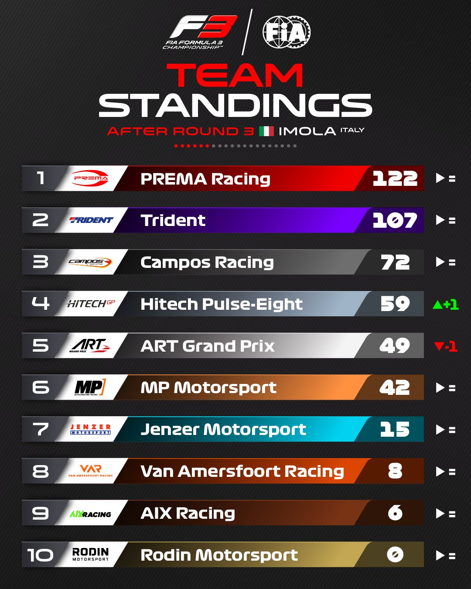
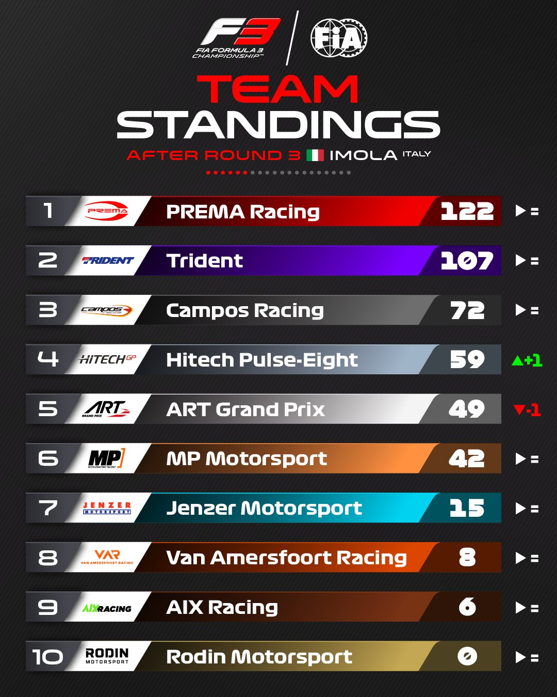

Post GP Imola
Después del Gran premio de la Emilia-Romaña, nos deja a un Leclerc segundo en el campeonato tras la mala carrera de Checo Perez y Norris cuarto muy cerca, con la sorpresa de Tsunoda en el Top 10.
Ferrari sigue cerca de Red Bull en constructores con la sombra de McLaren en las últimas carreras mientras Aston Martin se desinfla cada vez más lejos de Mercedes al punto de estar más cerca de ellos el equipo de RB gracias a un gran Tsunoda que esta haciendo un principio de temporada casi perfecto.
Con la victoria de Hadjar, el equipo Campos asalta el liderato de la tabla por equipos mientras Maloney sigue manteniendo el liderato con Paul Aron segundo y el propio Hadjar tercero y a la caza de los dos primeros. En la sprint Franco Colapinto gano su primera carrera de F2 en un adelantamiento al limite al final de carrera.
Aqui si tenemos un cambio de lider, Browning baja al segundo escalón ante Fornaroli con los 5 primeros en 11 puntos. Siendo este último, Oliver Goethe, el subcampeon de ambas carreras y gracias a eso pudo meterse en esta posible lucha a 5 por el campeonato de F3 que en la tabla de equipos esta mucho menos emocionante con Prema liderando con mano de hierro.
 
